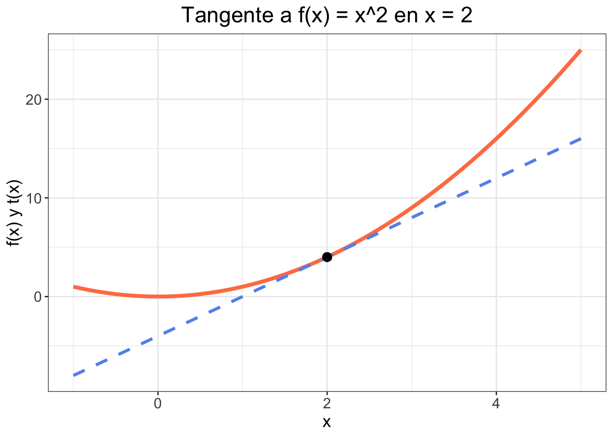
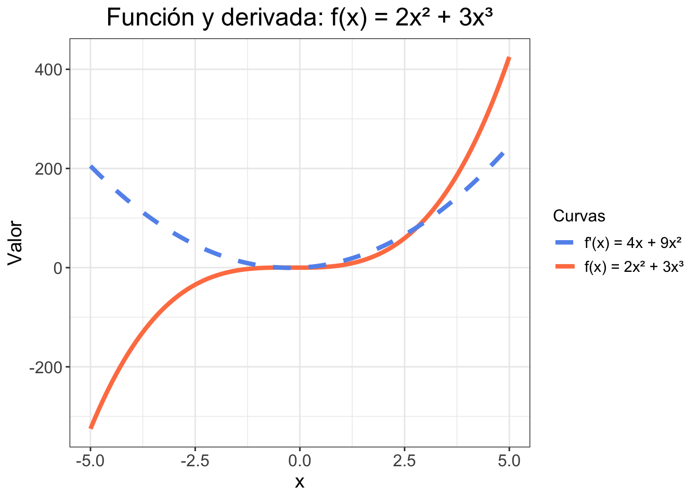
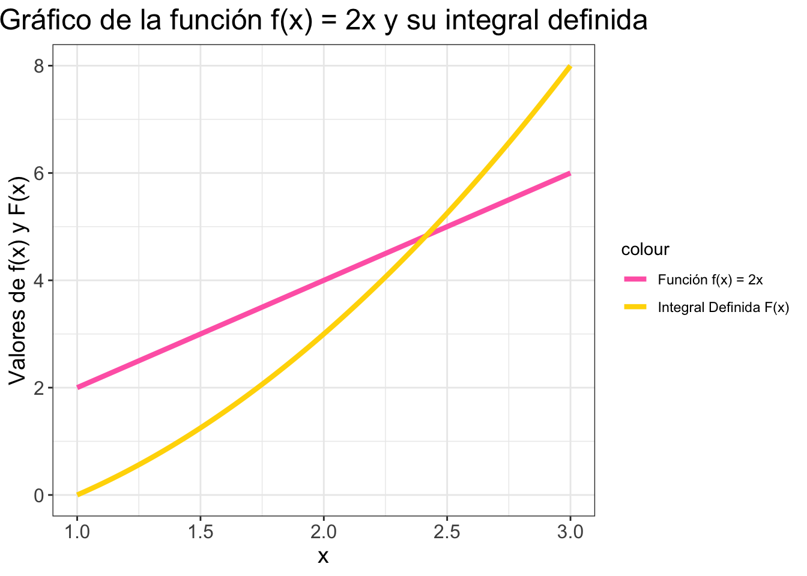

# Load required libraries
library(ggplot2)
# Create a function to calculate f(x) = 2x + 1
f_x <- function(x) {
2 * x + 1
}
# Create a data frame with x values from -5 to 5
x_values <- seq(-5, 5, 0.1)
data_df <- data.frame(x = x_values)
# Calculate the y values for f(x) = 2x + 1
data_df$y <- f_x(data_df$x)
# Create the plot for the function f(x) = 2x + 1
ggplot(data_df, aes(x, y)) +
geom_line(color = "#FF7F50", size = 1.5) +
labs(title = "Gráfico de la función f(x) = 2x + 1",
x = "x",
y = "f(x)") +
theme_bw() +
theme(plot.title = element_text(size = 18, hjust = 0.5),
axis.title = element_text(size = 14),
axis.text = element_text(size = 12))Nivelación matemática
1. Funciones
1.1 Definición Formal
Una función \(f(x)\) es una regla que asigna a cada elemento \(x\) de un conjunto \(X\) exactamente un elemento \(y\) de un conjunto \(Y\). Formalmente, una función se puede definir como:
\[f: X \rightarrow Y\]
donde \(X\) es el dominio de la función y \(Y\) es el codominio. Esto significa que la función toma valores de \(X\) (el dominio) y los transforma en valores en \(Y\) (el codominio). Cada valor individual en \(X\) se llama argumento de la función, y cada valor correspondiente en \(Y\) es el valor de la función para ese argumento.
1.2 Definición Intuitiva
Podemos pensar en una función como una máquina que toma un valor \(x\) como entrada y produce un valor \(y\) como salida. Esta “máquina” sigue la regla específica dada por la función. Por ejemplo, la función \(f(x) = x^2\) toma un número \(x\) y produce su cuadrado como salida. Cada valor \(x\) tiene un único valor \(y\) asociado. Gráficamente, una función representa una curva en un plano cartesiano donde el eje \(x\) representa las entradas y el eje \(y\) representa las salidas.
1.3 Ejemplo y Gráfico
Consideremos la función \(f(x) = 2x + 1\), donde \(x\) pertenece a los números reales.
Para calcular los valores de esta función, simplemente tomamos cualquier valor de \(x\), lo multiplicamos por 2, y luego sumamos 1. Por ejemplo, si \(x = 2\), entonces \(f(x) = 2 \times 2 + 1 = 5\).
Podemos visualizar esta función en un gráfico con gráficos más atractivos y una paleta de colores más agradable:
Este gráfico ilustra visualmente cómo cambia el valor de \(f(x)\) a medida que \(x\) varía de -5 a 5.
2. Funciones Exponenciales
2.1 Definición Formal
Una función exponencial es una función de la forma \(f(x) = a^x\), donde ‘a’ es una constante positiva diferente de 1. Las funciones exponenciales tienen algunas propiedades importantes que las distinguen de otras funciones.
2.2 Propiedades de las funciones exponenciales
Las funciones exponenciales obedecen las siguientes reglas, que son útiles para manipular y simplificar las expresiones exponenciales:
Producto de potencias: \(a^m \cdot a^n = a^{m+n}\)
Ejemplo: \(3^2 \cdot 3^4 = 3^{2+4} = 3^6 = 729\)
Cociente de potencias: \(a^m / a^n = a^{m-n}\)
Ejemplo: \(5^4 / 5^2 = 5^{4-2} = 5^2 = 25\)
Potencia de una potencia: \((a^m)^n = a^{mn}\)
Ejemplo: \((3^3)^2 = 3^{3*2} = 3^6 = 729\)
Exponente cero: \(a^0 = 1\)
Ejemplo: \(10^0 = 1\)
Exponente negativo: \(a^{-n} = 1/a^n\)
Ejemplo: \(4^{-2} = 1/4^2 = 1/16 = 0.0625\)
Exponentes de productos: \((ab)^n = a^n \cdot b^n\)
Ejemplo: \((2*4)^3 = 2^3 \cdot 4^3 = 8 \cdot 64 = 512\)
Exponentes de cocientes: \((a/b)^n = a^n / b^n\)
Ejemplo: \((6/3)^2 = 6^2 / 3^2 = 36 / 9 = 4\)
2.3 Ejemplo y Gráfico
Consideremos la función exponencial \(f(x) = 2^x\).
Para calcular los valores de esta función, simplemente tomamos cualquier valor de \(x\) y lo usamos como el exponente de 2. Por ejemplo, si \(x = 2\), entonces \(f(x) = 2^2 = 4\).
Podemos visualizar esta función en un gráfico con gráficos más atractivos y una paleta de colores más agradable:
# Create a data frame with x values from -3 to 3
x_values <- seq(-3, 3, 0.1)
data_df <- data.frame(x = x_values)
# Calculate the y values for f(x) = 2^x
data_df$y <- 2^x_values
# Create the plot for the function f(x) = 2^x
ggplot(data_df, aes(x, y)) +
geom_line(color = "#FF7F0E", size = 1.5) +
labs(title = "Gráfico de la función f(x) = 2^x",
x = "x",
y = "f(x)") +
theme_bw() +
theme(plot.title = element_text(size = 18, hjust = 0.5),
axis.title = element_text(size = 14),
axis.text = element_text(size = 12))Este gráfico muestra cómo cambia el valor de \(f(x)\) a medida que \(x\) varía de -3 a 3. Puedes observar cómo los valores de \(f(x)\) crecen rápidamente para valores positivos de \(x\) y se acercan a 0 para valores negativos de \(x\), lo cual es una característica distintiva de las funciones exponenciales.
3. Sumatorias
3.1 Definición Formal
La sumatoria es una notación matemática que representa la suma de una secuencia de valores. Formalmente, una sumatoria se puede definir como:
\[\sum_{i=1}^{n} a_i\]
donde \(a_i\) son los términos de la secuencia y \(n\) es el número total de términos en la secuencia. En esta notación, \(i\) es el índice que nos dice qué término de la secuencia estamos sumando, y \(n\) es el límite superior, que nos indica hasta qué término debemos sumar.
3.2 Definición Intuitiva
Podemos pensar en la sumatoria como la adición de todos los valores de una secuencia. La notación \(\sum\) nos indica que debemos sumar todos los términos de la secuencia desde \(i = 1\) hasta \(i = n\). Por ejemplo, si tenemos la secuencia \(a = [a_1, a_2, a_3, a_4, a_5]\), entonces la sumatoria de los términos de \(a\) sería \(a_1 + a_2 + a_3 + a_4 + a_5\).
3.3 Propiedades y Ejemplo
Las sumatorias tienen varias propiedades que pueden ser útiles para simplificar cálculos. Aquí vamos a examinar dos de ellas.
Propiedad 1: Suma de Constantes
La sumatoria de una constante multiplicada por el número de términos \(n\) es igual a la constante multiplicada por la suma de los términos.
\[\sum_{i=1}^{n} c = c \cdot n\]
Ejemplo: Consideremos la secuencia de cinco términos: \(1, 1, 1, 1, 1\).
- Encontrar la sumatoria de la secuencia: \[\sum_{i=1}^{5} 1 = 1 + 1 + 1 + 1 + 1 = 5\]
Por lo tanto, podemos ver que la sumatoria de esta constante (1) multiplicada por el número de términos (5) es igual a la constante (1) multiplicada por la suma de los términos (5).
Propiedad 2: Suma de Términos Consecutivos
La sumatoria de los \(n\) primeros números naturales consecutivos es igual a \(\frac{n(n + 1)}{2}\).
\[\sum_{i=1}^{n} i = \frac{n(n + 1)}{2}\]
Ejemplo: Consideremos la sumatoria de los primeros cinco números naturales: \(1, 2, 3, 4, 5\).
- Encontrar la sumatoria de los cinco primeros números naturales: \[\sum_{i=1}^{5} i = 1 + 2 + 3 + 4 + 5 = 15\] \[\frac{5(5 + 1)}{2} = 15\]
Por lo tanto, podemos ver que la sumatoria de los primeros cinco números naturales es igual a \(\frac{5(5 + 1)}{2}\), que también es 15.
3.4 Aplicación
Consideremos un escenario en el cual tenemos un conjunto de datos que representa las ventas diarias de una empresa durante una semana:
| Día | Ventas |
|---|---|
| Lunes | 1500 |
| Martes | 1200 |
| Miércoles | 1800 |
| Jueves | 1300 |
| Viernes | 1400 |
| Sábado | 2000 |
| Domingo | 1700 |
Queremos determinar el total de ventas durante la semana utilizando la sumatoria de los datos proporcionados.
# Definir las ventas diarias
ventas_diarias <- c(1500, 1200, 1800, 1300, 1400, 2000, 1700)
# Calcular el total de ventas durante la semana
total_ventas_semana <- sum(ventas_diarias)
print(total_ventas_semana)[1] 10900El código de arriba calculará la sumatoria de las ventas diarias durante la semana, lo que nos dará el total de ventas realizadas en ese período de tiempo.
4. Derivadas
4.1 Definición Formal
La derivada de una función \(f(x)\) en un punto \(x\) se define como el límite del cociente incremental cuando el cambio en \(x\) tiende a cero. Formalmente, la derivada se puede definir como:
\[f'(x) = \lim_{h \to 0} \frac{f(x + h) - f(x)}{h}\]
donde \(h\) es una cantidad muy pequeña que representa el cambio en \(x\).
4.2 Definición Intuitiva
Podemos pensar en la derivada como la tasa de cambio instantáneo de una función en un punto específico. La derivada nos indica cómo cambia el valor de \(y\) con respecto a \(x\) en un punto particular.
La derivada de una función en un punto puede interpretarse como la pendiente de la línea tangente a la gráfica de la función en ese punto. Vamos a mostrar esto con un gráfico utilizando la función \(f(x) = x^2\), y calcularemos la derivada en el punto \(x = 2\).
# Create a vector of x values from -1 to 3
x_values <- seq(-1, 3, 0.1)
# Define the function f(x) = x^2
f_x <- function(x) {x^2}
# Calculate the corresponding y values for the function f(x) = x^2
y_values <- f_x(x_values)
# Define the tangent line t(x) = 4*x - 4
t_x <- function(x) {4*x - 4}
# Calculate the corresponding y values for the tangent line
y_tangente <- t_x(x_values)
# Create a data frame for the tangent point (2, 4)
tangent_point <- data.frame(x = 2, y = 4)
# Create the plot for the function f(x) = x^2 and its tangent line at x = 2
grafico_tangente <- ggplot() +
geom_line(data = data.frame(x = x_values, y = y_values), aes(x, y), color = "#FF7F50", size = 1.5) +
geom_line(data = data.frame(x = x_values, y = y_tangente), aes(x, y), color = "#6495ED", size = 1.5) +
geom_point(data = tangent_point, aes(x, y), color = "black", size = 3) +
annotate("text", x = 2, y = 0, label = "Punto de tangencia (2,4)", hjust = 0, vjust = 1) +
labs(title = "Interpretación de la tangente de la derivada",
x = "x",
y = "f(x), t(x)") +
theme_bw() +
theme(plot.title = element_text(size = 18, hjust = 0.5),
axis.title = element_text(size = 14),
axis.text = element_text(size = 12))
print(grafico_tangente)En este gráfico, la línea azul representa la función \(f(x) = x^2\), la línea roja representa la línea tangente en el punto \(x = 2\), y el punto negro indica el punto de tangencia. Como puedes observar, la pendiente de la línea tangente en \(x = 2\) es igual al valor de la derivada de la función en ese punto.
4.3 Propiedades y Ejemplo
Propiedad 1: Regla de la Potencia
La derivada de una función \(f(x) = x^n\) donde \(n\) es una constante, es igual a \(n \cdot x^{n-1}\).
\[\frac{d}{dx} (x^n) = n \cdot x^{n-1}\]
Ejemplo: Consideremos la función \(f(x) = x^2\).
- Encontrar la derivada de \(f(x)\): \[\frac{d}{dx} (x^2) = 2x^{2-1} = 2x\]
# Vector de x
x_values <- seq(-1, 5, 0.1)
# Función y derivada
f_x <- function(x) x^2
x0 <- 2
slope <- 2 * x0 # f'(x) = 2x, entonces f'(2) = 4
y0 <- f_x(x0)
# Recta tangente en x0
tangent <- function(x) slope * (x - x0) + y0
# Datos
data <- data.frame(x = x_values,
f_x = f_x(x_values),
t_x = tangent(x_values))
# Gráfico
library(ggplot2)
ggplot(data, aes(x)) +
geom_line(aes(y = f_x), color = "#FF7F50", size = 1.5) +
geom_line(aes(y = t_x), color = "#6495ED", size = 1.2, linetype = "dashed") +
geom_point(aes(x = x0, y = y0), size = 3, color = "black") +
labs(title = "Tangente a f(x) = x^2 en x = 2",
x = "x",
y = "f(x) y t(x)") +
theme_bw() +
theme(plot.title = element_text(size = 18, hjust = 0.5),
axis.title = element_text(size = 14),
axis.text = element_text(size = 12))
Propiedad 2: Regla de la Suma
La derivada de la suma de dos funciones es igual a la suma de las derivadas de esas funciones. Es decir, si \(f(x) = g(x) + h(x)\), entonces \(f'(x) = g'(x) + h'(x)\).
\[\frac{d}{dx} (g(x) + h(x)) = g'(x) + h'(x)\]
Ejemplo: Consideremos las funciones \(g(x) = 2x^2\) y \(h(x) = 3x^3\). Queremos encontrar la derivada de su suma \(f(x) = g(x) + h(x)\):
- Encontrar la derivada de \(f(x)\): Primero, calculamos las derivadas de \(g(x)\) y \(h(x)\): \[g'(x) = 4x\] \[h'(x) = 9x^2\]
Entonces, \[f'(x) = g'(x) + h'(x) = 4x + 9x^2\]
# Definir funciones
f <- function(x) 2 * x^2 + 3 * x^3
f_prime <- function(x) 4 * x + 9 * x^2
# Dominio
x_values <- seq(-5, 5, 0.1)
# Evaluación
df <- data.frame(
x = x_values,
fx = f(x_values),
dfx = f_prime(x_values)
)
# Graficar
library(ggplot2)
ggplot(df, aes(x)) +
geom_line(aes(y = fx, color = "f(x) = 2x² + 3x³"), size = 1.5) +
geom_line(aes(y = dfx, color = "f'(x) = 4x + 9x²"), size = 1.5, linetype = "dashed") +
scale_color_manual(values = c("f(x) = 2x² + 3x³" = "#FF7F50", "f'(x) = 4x + 9x²" = "#6495ED")) +
labs(
title = "Función y derivada: f(x) = 2x² + 3x³",
x = "x",
y = "Valor",
color = "Curvas"
) +
theme_bw() +
theme(
plot.title = element_text(size = 18, hjust = 0.5),
axis.title = element_text(size = 14),
axis.text = element_text(size = 12),
legend.title = element_text(size = 12),
legend.text = element_text(size = 11)
)
4.4 Aplicación
Considera la población de un país en función del tiempo, \(P(t)\), donde \(t\) representa el tiempo en años. La tasa de cambio de la población, que se puede considerar como el crecimiento de la población, es simplemente la derivada de \(P(t)\) con respecto al tiempo, \(P'(t)\).
Supongamos que la población de un país en un año \(t\) está dada por la función \(P(t) = 500 + 20t^2\). Queremos encontrar la tasa de cambio de la población en el año \(t = 10\).
Primero, calculamos la derivada de \(P(t)\): \[P'(t) = \frac{d}{dt} (500 + 20t^2) = 40t\]
Luego, evaluamos la derivada en \(t = 10\): \[P'(10) = 40 \cdot 10 = 400\]
Por lo tanto, la tasa de cambio de la población en el año \(t = 10\) es de 400 personas por año.
5. Integrales Discretas (Sumatorias)
5.1 Definición Formal
La integral discreta de una función \(f(x)\) en un conjunto discreto de puntos \(\{x_1, x_2, ..., x_n\}\) se puede representar mediante una sumatoria. Formalmente, la integral discreta se puede definir como:
\[\sum_{i=1}^{n} f(x_i) \cdot \Delta x\]
donde \(\Delta x\) es la distancia entre los puntos \(x_i\) y \(x_{i+1}\).
5.2 Definición Intuitiva
Podemos pensar en la integral discreta como la suma de áreas de rectángulos con base \(\Delta x\) y altura \(f(x_i)\), donde \(x_i\) son los puntos del conjunto.
5.3 Propiedades
La integral discreta tiene las siguientes propiedades:
Linearidad: La integral discreta de la suma de dos funciones es igual a la suma de las integrales discretas de las dos funciones.
\[\sum_{i=1}^{n} (f(x_i) + g(x_i)) \cdot \Delta x = \sum_{i=1}^{n} f(x_i) \cdot \Delta x + \sum_{i=1}^{n} g(x_i) \cdot \Delta x\]
Escalabilidad: La integral discreta de una constante veces una función es igual a la constante veces la integral discreta de la función.
\[\sum_{i=1}^{n} (c \cdot f(x_i)) \cdot \Delta x = c \cdot \sum_{i=1}^{n} f(x_i) \cdot \Delta x\]
donde \(c\) es una constante.
5.4 Ejemplo y Gráfico
Vamos a ilustrar el concepto de integral discreta utilizando el ejemplo de la función \(f(x) = x^2\) y un conjunto de puntos \(\{0, 1, 2, 3, 4\}\).
Paso 1: Definir la secuencia de puntos
Comenzamos definiendo una secuencia de puntos desde 0 hasta 4. Estos son los valores de \(x\) para los que deseamos calcular la integral discreta.
# Crear la secuencia de puntos
puntos <- 0:4
print(puntos)[1] 0 1 2 3 4Paso 2: Calcular los valores de \(f(x)\)
Para cada valor de \(x\), calculamos el valor correspondiente de \(f(x) = x^2\). Esto se logra al elevar cada valor en la secuencia al cuadrado.
# Calcular los valores correspondientes de y para la función f(x) = x^2
y_values <- puntos^2;
print(y_values)[1] 0 1 4 9 16Paso 3: Calcular \(\Delta x\)
Calculamos \(\Delta x\), que es la distancia entre cada par de puntos sucesivos en la secuencia. En este caso, como los puntos están igualmente espaciados, \(\Delta x\) es constante e igual a 1.
# Calcular el incremento entre puntos
delta_x <- diff(puntos)
print(delta_x)[1] 1 1 1 1Paso 4: Calcular la integral discreta
De acuerdo con la definición formal de la integral discreta, la integral es la suma de los productos \(f(x_i) \cdot \Delta x\) para cada \(x_i\) en la secuencia. En este caso, multiplicamos cada valor de \(f(x)\) por el correspondiente \(\Delta x\) y luego sumamos todos estos productos.
# Calcular la integral discreta
integral_discreta <- sum(y_values[-1] * delta_x)
print(integral_discreta)[1] 30Paso 5: Crear el gráfico
Finalmente, creamos un gráfico utilizando ggplot2 para visualizar tanto la función \(f(x) = x^2\) como la integral discreta. La función se representa como una línea y la integral discreta se representa como el área bajo la curva de la función, correspondiente a la suma de las áreas de los rectángulos con base \(\Delta x\) y altura \(f(x_i)\).
Vamos a usar geom_rect para visualizar los rectángulos que representan los términos de la suma en la integral discreta.
# Load required library
library(ggplot2)
# Assuming puntos and y_values are defined appropriately
puntos <- c(1, 1.5, 2, 2.5, 3)
y_values <- puntos^2
# Create a dataframe with the integral discrete rectangles
integral_data <- data.frame(xmin = puntos[-length(puntos)],
xmax = puntos[-1],
ymin = 0,
ymax = y_values[-1])
# Create a dataframe with the function values
function_data <- data.frame(x = puntos, y = y_values)
# Create the plot for the function f(x) = x^2 and the integral discrete
grafico_integral_discreta <- ggplot() +
geom_rect(data = integral_data, aes(xmin = xmin, xmax = xmax, ymin = ymin, ymax = ymax), fill = "#FF69B4", alpha = 0.7) +
geom_line(data = function_data, aes(x = x, y = y, color = "Función f(x) = x^2"), size = 1.5) +
geom_point(data = function_data, aes(x = x, y = y), color = "red", size = 3) +
labs(title = "Gráfico de la función f(x) = x^2 y la integral discreta",
x = "x",
y = "f(x)") +
labs(fill = "Área bajo la curva") +
scale_color_manual(values = c("#FF7F50")) +
theme_bw() +
theme(plot.title = element_text(size = 18, hjust = 0.5),
axis.title = element_text(size = 14),
axis.text = element_text(size = 12))
print(grafico_integral_discreta)De esta manera, el gráfico y el código ilustran visualmente cómo se calcula una integral discreta: mediante la suma de áreas de rectángulos con base \(\Delta x\) y altura \(f(x_i)\), para cada punto \(x_i\) en un conjunto dado. En el gráfico, cada rectángulo representa un término de la suma en la integral discreta.
5.5 Aplicación: Estimación de la Población Total
Suponga que se tiene una función \(P(t)\) que representa la población de un país en el tiempo. Para estimar la población total durante un período de tiempo, se podría utilizar una integral discreta.
Por ejemplo, supongamos que tenemos la siguiente función de población \(P(t) = 50t + 100\) y queremos estimar la población total del país entre los años 2000 (t = 0) y 2005 (t = 5).
Primero, creamos el conjunto de puntos para los años \(\{0, 1, 2, 3, 4, 5\}\).
Luego, calculamos los valores de \(P(t)\) para estos años: [P(t) = {100, 150, 200, 250, 300, 350}].
Finalmente, utilizamos la fórmula de la integral discreta para estimar la población total:
# Crear el conjunto de puntos para los años
años <- 0:5
# Calcular los valores de P(t)
valores_P <- 50 * años + 100
# Calcular el incremento entre puntos
delta_t <- diff(años)
# Calcular la integral discreta (población total estimada)
poblacion_total_estimada <- sum(valores_P * delta_t)
poblacion_total_estimada[1] 1350La población total estimada durante este período de tiempo es 1350.
6. Integrales Continuas
6.1 Definición Formal
La integral de una función \(f(x)\) en un intervalo \([a, b]\) representa el área bajo la curva de la función en el intervalo dado. Formalmente, la integral se puede definir como:
\[\int_{a}^{b} f(x) \, dx\]
6.2 Definición Intuitiva
Podemos pensar en la integral como la suma acumulada de infinitos rectángulos bajo la curva de la función en el intervalo \([a, b]\). La integral nos da una medida del “área” encerrada entre la curva de la función y el eje \(x\) en el intervalo dado.
6.3 Propiedades
Propiedad 1: Linealidad
La integral de una constante multiplicada por una función es igual a la constante multiplicada por la integral de la función.
\[\int c \cdot f(x) \, dx = c \cdot \int f(x) \, dx\]
Propiedad 2: Aditividad
La integral de la suma de dos funciones es igual a la suma de las integrales de esas funciones.
\[\int (f(x) + g(x)) \, dx = \int f(x) \, dx + \int g(x) \, dx\]
Propiedad 3: Intervalo
Si se invierte el intervalo de integración, el resultado de la integral se multiplica por -1.
\[\int_{a}^{b} f(x) \, dx = -\int_{b}^{a} f(x) \, dx\]
6.4 Ejemplo, Cómputo y Representación Gráfica
Consideremos la función \(f(x) = 2x\) en el intervalo \([1, 3]\).
- Calculemos la integral definida de \(f(x)\) en el intervalo \([1, 3]\) utilizando el Teorema Fundamental del Cálculo.
Para hacer esto, primero necesitamos encontrar una antiderivada \(F(x)\) de \(f(x)\). Esto se puede hacer integrando \(f(x)\):
\[F(x) = \int_{1}^{x} 2t \, dt\]
Resolviendo esto obtenemos:
\[F(x) = \left[ t^2 \right]_{1}^{x} = x^2 - 1\]
- Ahora, calculemos la integral definida de \(f(x)\) en el intervalo \([1, 3]\) utilizando la segunda parte del Teorema Fundamental del Cálculo:
\[\int_{1}^{3} 2x \, dx = F(3) - F(1) = (3^2 - 1) - (1^2 - 1) = 9 - 0 = 9\]
Esto significa que el área bajo la curva \(f(x) = 2x\) desde \(x = 1\) hasta \(x = 3\) es de 9 unidades.
# Load required library
library(ggplot2)
# Create a vector of x values from 1 to 3
x_values <- seq(1, 3, 0.01)
# Calculate the corresponding y values for the function f(x) = 2x
y_values <- 2 * x_values
# Calculate the corresponding values for the integral of f(x) = 2x
F_x_values <- x_values^2 - 1
# Create a plot for the function f(x) = 2x and the area under the curve
grafico_teorema_fundamental <- ggplot(data.frame(x = x_values, y = y_values, F_x = F_x_values), aes(x)) +
geom_line(aes(y = y_values, color = "Función f(x) = 2x"), size = 1.5) +
geom_line(aes(y = F_x_values, color = "Integral Definida F(x)"), size = 1.5) +
labs(title = "Gráfico de la función f(x) = 2x y su integral definida",
x = "x",
y = "Valores de f(x) y F(x)") +
scale_color_manual(values = c("#FF69B4", "#FFD700")) +
theme_bw() +
theme(plot.title = element_text(size = 18, hjust = 0.5),
axis.title = element_text(size = 14),
axis.text = element_text(size = 12))
print(grafico_teorema_fundamental)
6.5 Aplicación
Supongamos que una elección se lleva a cabo a lo largo de un día (de t = 0 a t = 24). La función \(V(t) = 100t^2\) representa la cantidad de votos acumulados a la hora \(t\). Para obtener una estimación del total de votos emitidos durante el día, podríamos calcular la integral de \(V(t)\) de 0 a 24.
Primero, definimos la función \(V(t)\) y luego calculamos la integral en el intervalo deseado:
# Define the function V(t)
V <- function(t) {
return(100 * t^2)
}
# Calculate the integral of V(t) from 0 to 24
delta_t <- 0.01
total_votos_estimado <- sum(V(seq(0, 24, delta_t))) * delta_t
total_votos_estimado[1] 461088La cantidad total estimada de votos emitidos durante el día es 4.6108804^{5}.
7. Teorema Fundamental del Cálculo
7.1 Enunciado
El Teorema Fundamental del Cálculo constituye un puente entre la diferenciación y la integración, dos conceptos centrales en el cálculo. Este teorema, en esencia, nos permite evaluar integrales definidas mediante la aplicación del concepto de diferenciación. Se compone de dos partes que juntas forman una explicación coherente de cómo estas dos operaciones fundamentales en cálculo se interrelacionan.
Teorema Fundamental del Cálculo (Primera Parte)
Dada una función \(f(x)\) que es continua en un intervalo \([a, b]\), y otra función \(F(x)\) que simboliza la integral definida de \(f(x)\) sobre el intervalo \([a, x]\), es decir,
\[F(x) = \int_{a}^{x} f(t) \, dt\]
entonces, de acuerdo con la primera parte del Teorema Fundamental del
Cálculo, la derivada de \(F(x)\) con respecto a \(x\) es precisamente \(f(x)\):
\[\frac{d}{dx} F(x) = f(x)\]
Esta parte del teorema afirma que si una función \(F\) es una antiderivada de \(f\) en el intervalo, entonces la derivada de la integral de \(f\) de \(a\) a \(x\) es la función misma.
Teorema Fundamental del Cálculo (Segunda Parte)
Supongamos que \(f(x)\) es una función continua en el intervalo \([a, b]\) y \(F(x)\) es una función que representa la integral definida de \(f(x)\) de \(a\) a \(x\), es decir,
\[F(x) = \int_{a}^{x} f(t) \, dt\]
Entonces, según la segunda parte del Teorema Fundamental del Cálculo, la integral definida de \(f(x)\) en el intervalo \([a, b]\) puede calcularse de la siguiente manera:
\[\int_{a}^{b} f(x) \, dx = F(b) - F(a)\]
Esta parte del teorema simplifica el cálculo de las integrales definidas al evaluar la función antiderivada en los extremos del intervalo.
7.2 Ejemplo, Cómputo y Representación Gráfica
Consideremos la función \(f(x) = 2x^2 + 3\) en el intervalo \([1, 3]\).
- Calculemos la integral definida de \(f(x)\) en el sub-intervalo \([1, 2]\) utilizando el Teorema Fundamental del Cálculo.
Primero necesitamos encontrar una antiderivada \(F(x)\) de \(f(x)\). En este caso, una antiderivada de \(f(x) = 2x^2 + 3\) es \(F(x) = \frac{2x^3}{3} + 3x\). La obtenemos integrando \(f(x)\) desde 1 hasta \(x\):
\[F(x) = \int_{1}^{x} (2t^2 + 3) \, dt\]
Que nos da:
\[F(x) = \left[ \frac{2t^3}{3} + 3t \right]_{1}^{x} = \frac{2x^3}{3} + 3x - \frac{2}{3} - 3\]
- Ahora, calculemos la integral definida de \(f(x)\) en el sub-intervalo \([1, 2]\) utilizando la segunda parte del Teorema Fundamental del Cálculo:
\[\int_{1}^{2} (2x^2 + 3) \, dx = F(2) - F(1) = \left(\frac{2*2^3}{3} + 3*2 - \frac{2}{3} - 3\right) - \left(\frac{2*1^3}{3} + 3*1 - \frac{2}{3} - 3\right) = \frac{23}{3}\]
Por lo tanto, el área bajo la curva \(f(x) = 2x^2 + 3\) desde \(x = 1\) hasta \(x = 2\) es de \(\frac{23}{3}\) unidades.
Ahora, vamos a visualizar esto con un gráfico en R:
Primero, creamos un vector de valores \(x\) en el rango de 1 a 3:
# Create a sequence of x values from 1 to 3
x_values <- seq(1, 3, 0.01)
print(x_values) [1] 1.00 1.01 1.02 1.03 1.04 1.05 1.06 1.07 1.08 1.09 1.10 1.11 1.12 1.13 1.14
[16] 1.15 1.16 1.17 1.18 1.19 1.20 1.21 1.22 1.23 1.24 1.25 1.26 1.27 1.28 1.29
[31] 1.30 1.31 1.32 1.33 1.34 1.35 1.36 1.37 1.38 1.39 1.40 1.41 1.42 1.43 1.44
[46] 1.45 1.46 1.47 1.48 1.49 1.50 1.51 1.52 1.53 1.54 1.55 1.56 1.57 1.58 1.59
[61] 1.60 1.61 1.62 1.63 1.64 1.65 1.66 1.67 1.68 1.69 1.70 1.71 1.72 1.73 1.74
[76] 1.75 1.76 1.77 1.78 1.79 1.80 1.81 1.82 1.83 1.84 1.85 1.86 1.87 1.88 1.89
[91] 1.90 1.91 1.92 1.93 1.94 1.95 1.96 1.97 1.98 1.99 2.00 2.01 2.02 2.03 2.04
[106] 2.05 2.06 2.07 2.08 2.09 2.10 2.11 2.12 2.13 2.14 2.15 2.16 2.17 2.18 2.19
[121] 2.20 2.21 2.22 2.23 2.24 2.25 2.26 2.27 2.28 2.29 2.30 2.31 2.32 2.33 2.34
[136] 2.35 2.36 2.37 2.38 2.39 2.40 2.41 2.42 2.43 2.44 2.45 2.46 2.47 2.48 2.49
[151] 2.50 2.51 2.52 2.53 2.54 2.55 2.56 2.57 2.58 2.59 2.60 2.61 2.62 2.63 2.64
[166] 2.65 2.66 2.67 2.68 2.69 2.70 2.71 2.72 2.73 2.74 2.75 2.76 2.77 2.78 2.79
[181] 2.80 2.81 2.82 2.83 2.84 2.85 2.86 2.87 2.88 2.89 2.90 2.91 2.92 2.93 2.94
[196] 2.95 2.96 2.97 2.98 2.99 3.00Luego, calculamos los correspondientes valores de \(y\) para la función \(f(x) = 2x^2 + 3\):
# Calculate the corresponding y values for the function f(x) = 2x^2 + 3
y_values <- 2 * x_values^2 + 3
print(y_values) [1] 5.0000 5.0402 5.0808 5.1218 5.1632 5.2050 5.2472 5.2898 5.3328
[10] 5.3762 5.4200 5.4642 5.5088 5.5538 5.5992 5.6450 5.6912 5.7378
[19] 5.7848 5.8322 5.8800 5.9282 5.9768 6.0258 6.0752 6.1250 6.1752
[28] 6.2258 6.2768 6.3282 6.3800 6.4322 6.4848 6.5378 6.5912 6.6450
[37] 6.6992 6.7538 6.8088 6.8642 6.9200 6.9762 7.0328 7.0898 7.1472
[46] 7.2050 7.2632 7.3218 7.3808 7.4402 7.5000 7.5602 7.6208 7.6818
[55] 7.7432 7.8050 7.8672 7.9298 7.9928 8.0562 8.1200 8.1842 8.2488
[64] 8.3138 8.3792 8.4450 8.5112 8.5778 8.6448 8.7122 8.7800 8.8482
[73] 8.9168 8.9858 9.0552 9.1250 9.1952 9.2658 9.3368 9.4082 9.4800
[82] 9.5522 9.6248 9.6978 9.7712 9.8450 9.9192 9.9938 10.0688 10.1442
[91] 10.2200 10.2962 10.3728 10.4498 10.5272 10.6050 10.6832 10.7618 10.8408
[100] 10.9202 11.0000 11.0802 11.1608 11.2418 11.3232 11.4050 11.4872 11.5698
[109] 11.6528 11.7362 11.8200 11.9042 11.9888 12.0738 12.1592 12.2450 12.3312
[118] 12.4178 12.5048 12.5922 12.6800 12.7682 12.8568 12.9458 13.0352 13.1250
[127] 13.2152 13.3058 13.3968 13.4882 13.5800 13.6722 13.7648 13.8578 13.9512
[136] 14.0450 14.1392 14.2338 14.3288 14.4242 14.5200 14.6162 14.7128 14.8098
[145] 14.9072 15.0050 15.1032 15.2018 15.3008 15.4002 15.5000 15.6002 15.7008
[154] 15.8018 15.9032 16.0050 16.1072 16.2098 16.3128 16.4162 16.5200 16.6242
[163] 16.7288 16.8338 16.9392 17.0450 17.1512 17.2578 17.3648 17.4722 17.5800
[172] 17.6882 17.7968 17.9058 18.0152 18.1250 18.2352 18.3458 18.4568 18.5682
[181] 18.6800 18.7922 18.9048 19.0178 19.1312 19.2450 19.3592 19.4738 19.5888
[190] 19.7042 19.8200 19.9362 20.0528 20.1698 20.2872 20.4050 20.5232 20.6418
[199] 20.7608 20.8802 21.0000Y creamos un gráfico que muestre la función \(f(x) = 2x^2 + 3\) y el área bajo la curva en el sub-intervalo \([1, 2]\):
# Create a plot for the function f(x) = 2x^2 + 3 and the area under the curve in the interval [1, 2]
grafico_integral <- ggplot(data.frame(x = x_values, y = y_values), aes(x, y)) +
geom_line(aes(y = y, color = "Función f(x) = 2x^2 + 3"), size = 1.5) +
geom_ribbon(data = data.frame(x = seq(1, 2, 0.01), y = 2 * seq(1, 2, 0.01)^2 + 3), aes(x, ymin = 0, ymax = y), fill = "#FF69B4", alpha = 0.5) +
labs(title = "f(x) = 2x^2 + 3 y área bajo la curva en [1, 2]",
x = "x",
y = "f(x)") +
scale_color_manual(values = c("#FF69B4", "#FFD700")) +
theme_bw() +
theme(plot.title = element_text(size = 18, hjust = 0.5),
axis.title = element_text(size = 14),
axis.text = element_text(size = 12))
print(grafico_integral)
Este gráfico muestra la función \(f(x) = 2x^2 + 3\) y el área bajo la curva en el sub-intervalo \([1, 2]\), que corresponde a la integral definida que calculamos como \(\frac{23}{3}\).
7.3 Aplicación
Supongamos que \(p(t)\) es la tasa de cambio de población en una ciudad, en miles de personas por año, y está dada por la función \(p(t) = 3t^2\), donde \(t\) es el tiempo en años desde el inicio de 2020.
Para encontrar el cambio total en la población desde 2020 hasta 2023 (3 años), podríamos utilizar el Teorema Fundamental del Cálculo.
- Primero, necesitamos encontrar una antiderivada \(P(t)\) de \(p(t)\). Esto se puede hacer integrando \(p(t)\):
\[P(t) = \int_{0}^{t} 3t^2 \, dt\]
Resolviendo esto obtenemos:
\[P(t) = \left[ t^3 \right]_{0}^{t} = t^3\]
- Ahora,
podemos calcular el cambio total en la población durante el intervalo \([0, 3]\) (desde 2020 hasta 2023) utilizando la segunda parte del Teorema Fundamental del Cálculo:
\[\int_{0}^{3} 3t^2 \, dt = P(3) - P(0) = (3^3 - 0) = 27\]
Por lo tanto, la población de la ciudad aumentó en 27 mil personas durante estos 3 años.